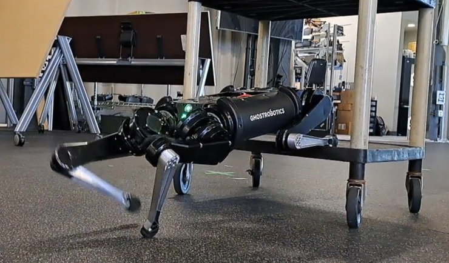
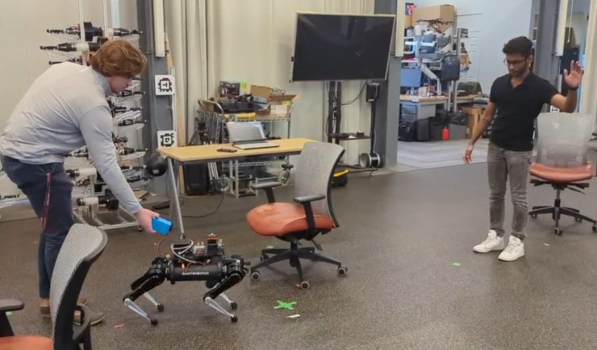
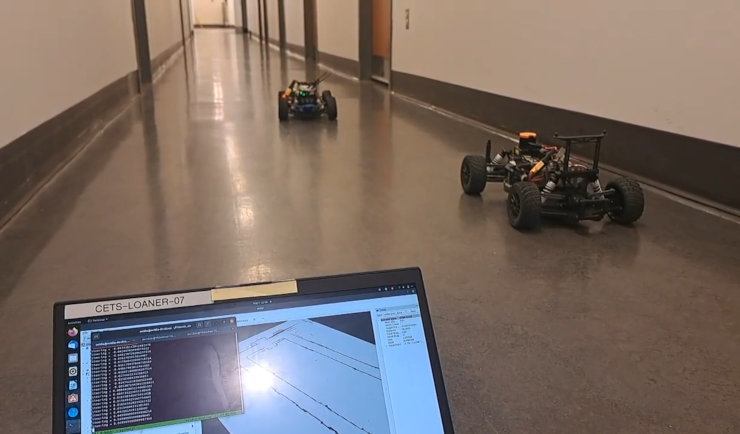
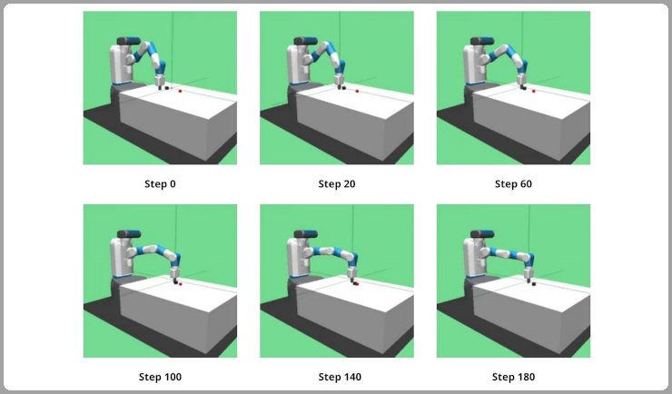
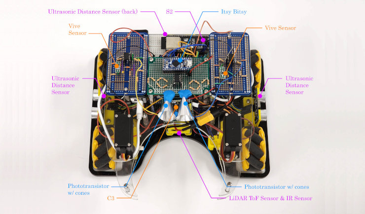
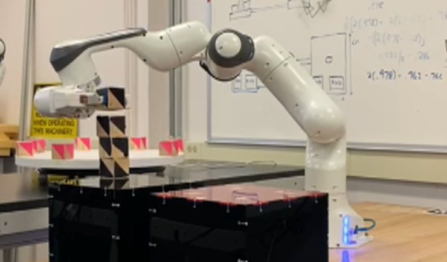

A full stack robotics engineer, anyone?
I want to build robots that humans feel safe and comfortable to partner with and work towards a common objective.
With expertise in robot kinematics, motion planning, and control, I have worked
on robot arms, quadrupedal legged robots, and autonomous vehicles (i.e. mobile robots, cars and boats).
All under the glorious light of C++.
What brings me joy at work is applying math to robotics. Whether that's programming a dynamics model,
performing homogenous transformation between frames, calculating angles around a robot leg, or
extrapolating trajectories for collision prediction.
If you need an engineer equally competent in robotics and C++, feel free send me an email. I'm currently open to work starting December 2023.
Download my resume here.
Work Experience
Robotics Software Engineering Intern, Carnegie Robotics
May 2023 - Aug 2023
- Assumed responsibility for the motion planning module for a large autonomous vehicle - executed algorithm
enhancements and resolved software issues using C++ 17.
- Implemented a kinematics logger that displayed performance metrics from path planning tests to quantitatively
evaluate the impact of a specific code change.
- Subject to NDA, no further details available.
Research Assistant, GRASP Laboratory (Kod*lab)
Aug 2022 - May 2023
- Developed quasi-static legged behaviors, such as Push Walk and Push Walk Bound, from simulation stage in Gazebo
to implementation on the Ghost Robotics' Spirit quadrupedal robot.
- Modified existing dynamic legged behaviors, such as Cart Mount, to cross the sim2real gap.
- Transposed a reactive navigation module for the Minitaur robot to Spirit in ROS2 to enable introduction of complex
legged behaviors in task planning and mobile manipulation.
- Supervised by Dr. Daniel Koditschek.
R&D Development Engineer, Dassault Systèmes
Jun 2018 - May 2021
- Executed product enhancements and incident requests in C++ for DELMIA, an industrial operations software.
- Retained a personal 100% on-time delivery rate for 3 years while maintaining all Efficiency and Quality indicators
for the product, including testing, code coverage, and regression.
- Earned ownership over DELMIA Workload Balancing and DELMIA Automatic Line Balancing modules by
demonstrating expertise in product management.
- Received the Evangelist Award for signification contribution to DELMIA Process Planning R&D.
Highlighted Projects

Developed quasi-static legged behaviors, such as Push-walk, from simulation stage in Gazebo
to implementation on the Ghost Robotics’ Spirit quadrupedal robot. Modified existing dynamic legged behaviors, such as Cart-mount, to cross the sim2real gap.
Skills: C++, ROS2, Gazebo, Linux, PID Control

Transposed a reactive navigation module for a Ghost Robotics Minitaur robot to Ghost Robotics Spirit in ROS2 to enable introduction of complex
legged behaviors in task planning and mobile manipulation.
Skills: C++, ROS1, ROS2, Linux

Achieved effective blocking by applying model predictive control on a reference path extrapolated from
the overtaking vehicle's trajectory. Safety ensured using costs on steering angle control.
Skills: Python, ROS2, Model Predictive Control

Developed a deep reinforcement learning agent from scratch in JAX Python that employs a policy gradient algorithm
to operate in the OpenAI FetchSlide environment.
Skills: Python, JAX, Reinforcement Learning

Built a mecanum-wheel, autonomous mobile robot using the ESP32 microcontroller in C++ for motor control,
sensor integration (IR detectors, Time of Flight LIDAR, HTC Vive), and autonomous behaviors.
Skills: C++, Espressif Microcontroller, Mechatronics

Developed a Python program to pick and place objects from stationary and rotating tables to a goal surface.
Employed AprilTags for localization, Gazebo for simulation, and a link-sphere model for collision avoidance.
Skills: Python, Robot Kinematics, Gazebo